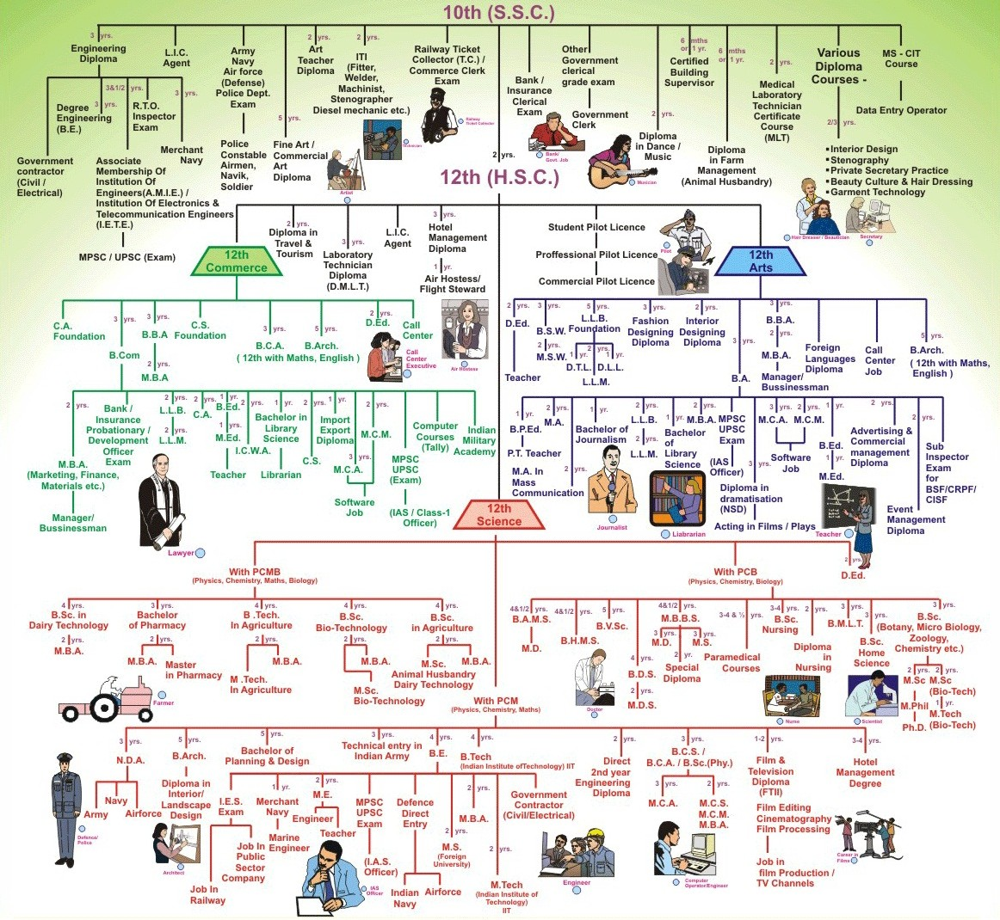

Home
About us
Contact
6+
Guidance before 10th
Click here
10+
Guidance After 10th
Click here
12+
Guidance After 12th
Click here
DEG+
Guidance After Degree
Click here
Career Guidance Flowchart

(1).png)